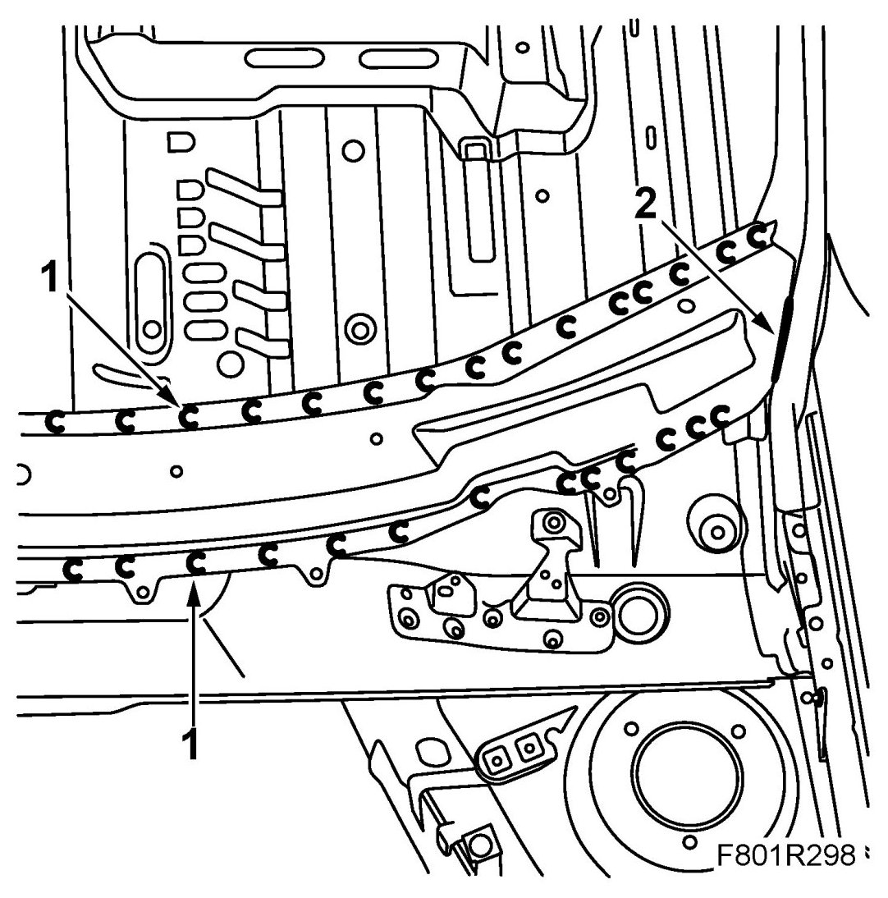
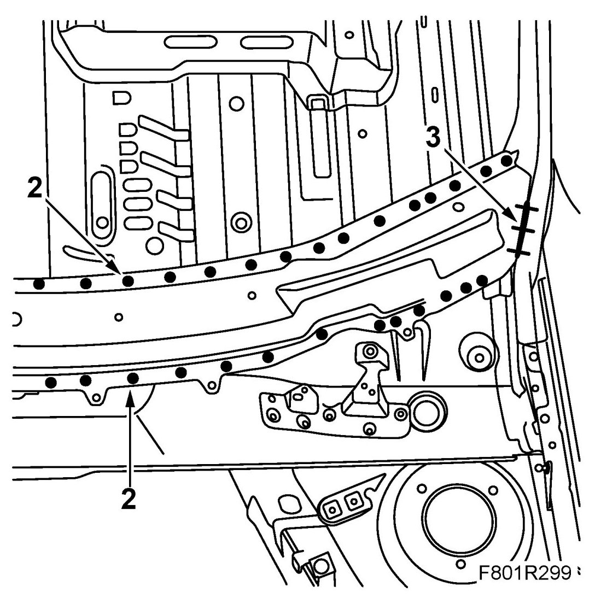

Windscreen Member, CV
Windscreen Member, CV
To remove
1. Drill out the spot welds.

2. Grind down the welds which secure the windscreen member to the lower ends of the A-pillars.
3. Tap loose the windscreen member and straighten any distorted panel.
4. Grind the surfaces of the body that are to be welded and the spare part.
5. Apply welding primer on the surfaces to be spot welded. Use Teroson Zink Spray.
To fit
1. Fit the replacement panel in place and secure it with some welding clamps.
2. Spot weld the new windscreen member securely.

3. All-weld the seams between the windscreen member and the lower ends of the A-pillars.
4. Grind the welds.
5. Wash away surplus welding primer. Welding primer reduces the adhesion of paint, filler and sealant.
6. Apply primer on all ground surfaces. Use Standox 1K Primer Filler.
7. Use Terostat 1K-PUR to seal joints and metal folds.